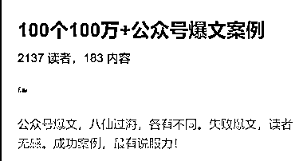
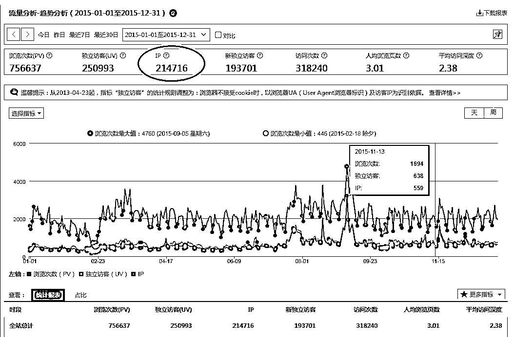
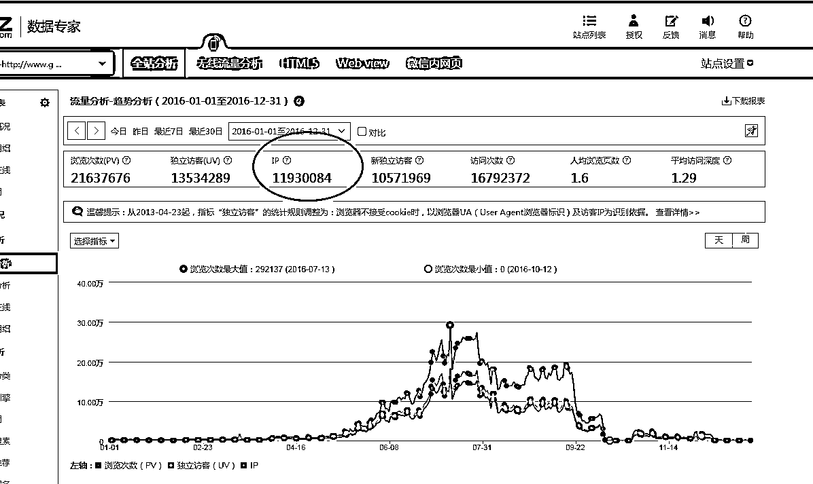
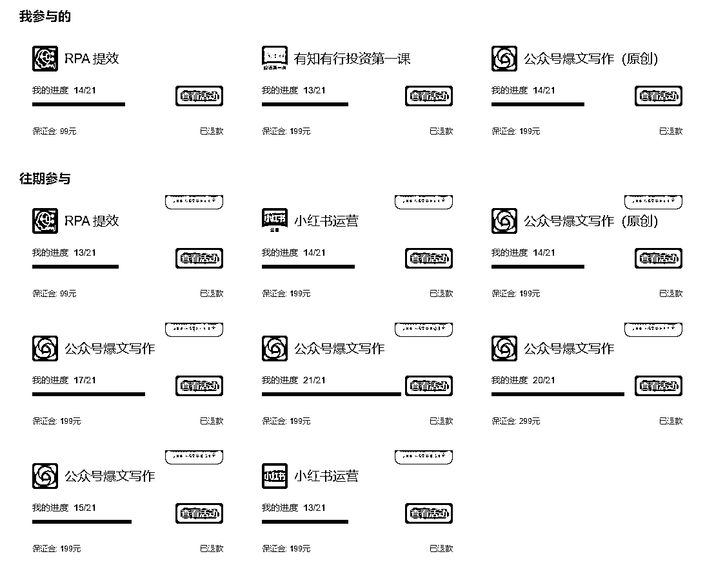
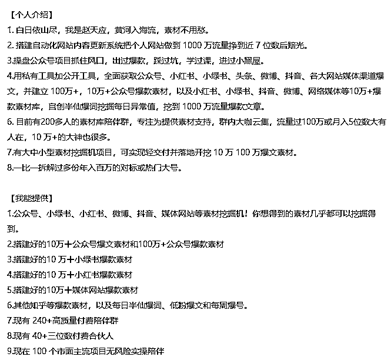
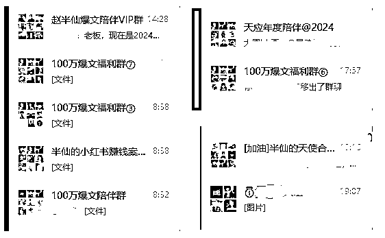
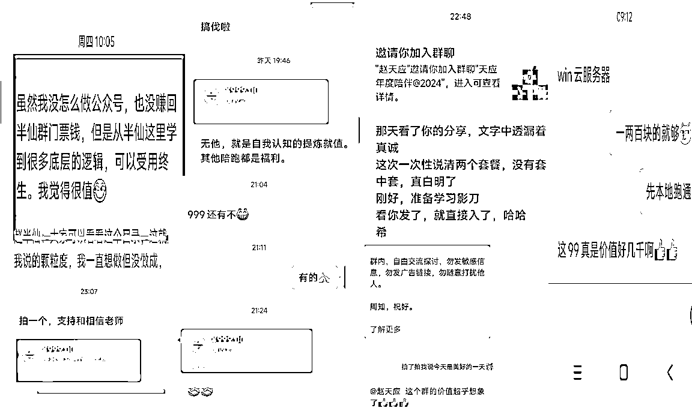

来源：https://owd2uo0wwxk.feishu.cn/docx/GhlddYLTMoDpZBxjUMjcNxuJnzu
白日依山尽，我是赵天应，先简单介绍一下我自己。
一枚80后体制职场中年，从医学领域主业踏进互联网，副业做了自媒体，目前聚焦在爆文、素材和陪伴。从零起步，凭借满腔热情和一股不服输的傻劲儿，硬生生趟出一条80后职场的新路。
职场挣扎20年，曾经靠做个人网站到1000万流量，挖到了人生的第一桶金，但能量不够赔光来凑，很快凭运气赚的钱凭实力投资赔得底朝天，一度心灰意冷，再加之职场不顺，几年下来一直没啥成果。
感觉和大多数的体制人一样，人生就那样了，上班下班再过20年等待退休。那种无力与死心的滋味，真是一言难尽。这也是为何主题叫重生的关键。
沉寂多年，职场老鸟决心尝试再次展翅，摸索着开启副业。
可这年头，90后、00后都开始崭露头角了，80后大叔搞副业还有没有搞头？
拖家带口，被绳索套牢的体制手脚还能不能放得开？
被缰固的头脑还能不能洗礼？
被看见再相信的眼界还能不能启封？
可，要成长，年龄根本不是问题，关键在于，有没有那份敢于挑战自我、敢于重新的勇气和决心。
幸好，我遇到了生财，遇到了生财悬崖式拉新第一的靠谱理白，也遇到了更多靠谱的大佬们，我的人生剧本仿佛一下子开启了加速模式。
转战自媒体，学习生财大佬们分享的文章和方法，先后跑通了公众号爆文百万流量、10万+/100万+劲爆素材挖掘，然后在大佬的扶持下，聚焦定位，结合实际，目标导向，价值吸引，素材开路，工具搭桥，陪伴陪跑，搭建起1000人小报童矩阵群，270多人付费素材群，180多人付费陪伴群，70多人付费陪跑群。
从没有产品到定位素材和陪伴，用半年时间，做到副业GMV10万+，开辟了 80 后职场大叔副业的新可能。
今天，天应把我的故事与大家分享，期待每一个探索副业的朋友，或者每一个在职场中摸爬滚打的朋友，能从我的故事中找到共鸣，也带走一丝启发。

我的故事，全文10000字，约需15分钟读完，分五个部分与大家共享：
1.草莽阶段：边学边干，凭爱好，个人网站做到千万流量
2.爆文素材：摸爬滚打，挖爆款，搞爆文坚持到底不放弃
3.私域社群：真诚分享，轻营销，分享陪伴真诚利他必胜
4.工具辅助：杠杆撬动，顺人性，提质增效克服懒惰基因
5.最小后悔：光说不练，假把式，不干说多了都是屎尿屁
医学背景出身的我，因为5年学制改革直接干掉了1年，原本可以拿行医执照的，从医学院拿了个管理学学士毕业，进入社会职场，原来要拿手术刀的人，改行做管理拿鼠标，以为能管好自己，但那有那么容易。
我和生财拉新第一的靠谱理白卧龙凤雏组合一样，都是学医的，并且我们还都在职场；只是他们是我敬仰的天花板，而我希望对标、成就他们的分毫。
受限于小镇做题家模型和思维，人生前半段基本没啥特别的追求，更没有所谓的定位。如果一定要有，就是瞎折腾，想起什么搞什么，身边有人干什么就跟着干什么，总之，就是先干起来。
有成就，是干出来的；没成就，也只能先再说。
后来发现，这反而是定位的核心，定位，不是定出来的，而是干出来的。
因为一直很喜欢网络，网络给了像我这样内向、小镇、无资源、无背景的人很好的机会，不需要人脉，不需要关系，不需要后台，有根网线，就能连接世界。用靠谱的话说，就是只要你放开心魔，抓紧行动，就能拿结果。
大概是在2010年，我就用业余时间捣鼓个人网站，因爱发电，做得挺开心。
一开始纯属爱好，后来觉得，还是要做离钱近一点的，就结合信息资讯和分类，做了地方门户，一度排名超过了本地最牛叉的zf网站，纯靠猛干手搓，搜索流量长期排本地第一名。
但是，没人引路，没技术没资源，不仅没流量，更没有钱响。
五年下来，网站混了个寂寞，到2015年，全年流量，勉强够凑个20万的局。

转折来自2016年，一堂SEO课，给我打开了新世界的大门。
当时，被朋友推荐邀请去听了一次SEO优化的公开课，听了才发现，以前玩的全都是野路子，别人玩剩下的三脚猫不入流的黑帽和0.1版本的手法。
随后狠心花2500块钱，跟朋友们一起系统学习SEO的历程，知道了TDK（title标题、descripition描述、keyword关键字），了解基于网络反应速度满足用户搜索需求和爬虫响应的算法，基于用户、基于环境、基于功能、基于体验等的白帽子优化手法。
可学归学，苦于不会技术，只能干瞪眼，望SEO兴叹，看别人流量飞涨，权重上升，别人钱包飞长而自己囊中羞涩。
然后，整天就是在群里瞎逛，偶尔别人推荐做得不错的站，以及一些白帽子技术方法，但都没有亲自下场。
群内又推荐了另外一个大神级别的人物的课程，说是找到了流量秘密，有执行力会基本的技术，跟着做就能出成果。像极了现在遍地开花的知识付费和cx模式。
但那时一心想赚钱，又狠心花了5000块，当时说是给两套方案，一是分享发现的巨大机会，二是参与站群模式共享巨大的机会。
付费后，其实只上了三节课。一节告诉我百度移动端流量巨大，一节告诉我们如何挖这个移动端的人性流量词，还有一节就是讲站群如何玩，类似于现在搞的爆文矩阵。
那时的站群，需要技术匹配，由于完全不懂技术，一方面需要花钱弄站群软件，自己维护，另外是不确定不相信能赚到钱，就放弃了。着重如何落地落实挖掘百度移动的流量词。
但正是这一次的5000块钱投资，技术小白用了不到一年的时间，直接把个人原来的小破网站，流量干到了1000万，收获了近百倍的回报。

学医的素人，技术七窍通了六窍，这波操作，“草莽”逆袭把网站做到千万，复盘总结，大约是这些因素：
一是时代红利。得益于当时的移动流量巨增，用户手机上网需求增加，百度推出手机移动端抢占流量。
而这样的机会，因为在小圈子里被人发掘出来，人家已经实操并赚到了，一方面通过培训赚利润，另一方面也是希望拉人一起做站群放大流量势能，承接转化广告流量。
结果我这个完全不懂技术的人，反而占了点不懂技术的便宜，没能融入渠道，生生的把自己的站给做到爆，直到流量太大碰了机关，关站收手。
靠谱说，这个时代，早就是产品过剩，渠道乏力的时代了。好产品好内容好服务比比皆是，但能卖得好的人不多。
4P营销里，渠道为王，谁有流量，谁能卖货，谁就是活爹。而那时的我，正好抓住时代的流量红利。
二是不怕试错的胆儿。得益于保持敏锐的角度，也是大胆的冒险，知道流量这个知识的价值。
因为很早之前，就一直开始尝试新技术，然后又有做个人网站超过10年以上的经历，直觉单纯的知识是没有价值的，知识要运用起来尤其是要与技术结合起来才有价值，才能承接巨大的流量。
从市面上几个主流的信息抓取工具测试，从0开始学习自动化抓内容发内容技术，选定火车头采集器这样大家推荐的工具入手，一个又一个地花了几百几千块钱，找人带路，请人写抓取规则、写入库规则，然后结合别人写出来的这个规则，自己边搜索边修改。
慢慢的，从会简单的代码，到完全仿写人家的代码；甚至因为流量过大，一套火车头跑起来太慢，直接买了三套旗舰版本。
随后就是大量抓取各类网站文章甚至国外的文章，去抢原创流量；另外，使用关键词进行交叉组合的方式，用同样的内容，使用不同的关键词，组合增加更多新的页面。
跟现在做的公众号爆文类似，很多人做爆文只赚推荐流量，而那里，我要的不光是百度移动端的推荐流量，还想要有搜索流量；不光有推送浏量，还有自然浏量，这样那怕很久之后，人家搜索到，还能产生收益。
就这样，硬生生的学了自动化，学会关键词交叉组合，一个关键字对应一篇文章，两个关键字对应两篇文章，而三个关键字就可以对应四篇文章，四个关键字可以对应9篇甚至16篇或24篇文章，页面数量大大增加。着陆页多了，流量自然也就大了。
三是遇贵人点拨。得益于贵人引路，人家愿意把跑通摸透的路径，相对低成本的分享出来，这是很了不起的成就。
对自己来说，能通过花钱贴身围观大佬的学思做行，更是捷径。然后如果还能进到大佬组的局、建的群，看到更多大佬指导后的新玩法，相当于是花一份学费得几份回报。更值。
5000块学费，当时超过了我一个月的工资，但一定要功利性的来说，大佬其实只教了我百度移动端的XX流量巨大，从人性底层的XX关键字获取流量。
工具，是群内的群友自发开发的免费送的，网站还是我自己原来的小破站，内容需要自己学抓取技术去弄。但思路一来天地宽。
像我这样八零后正经人，突然通过“啊~啊~啊~”这样的一个词，打开了一扇新世界的大门，那种震惊程度，那种突然发现别人的赚钱思路，那种别人看到机会后的赚钱速度，完全颠覆了我曾经的想象。
“啊~啊~啊~”这三个字，懂的都懂，但在对的时间、遇到对的人、给出对的方向，使用对方法，每一步都很难。
而我通过百度的特殊渠道，持续挖掘和拿到大量的类似的关键字，批量抓取相关文章和漂亮图片，不断组合产生更多的页面，去承接源源不断流量进而变现，这是当时逆袭的关键，也是最好的选择。
一手货源，狗都不做。而那时的其他人，大家都在抢头部的、需要挤破头的关键词，并且需要付出99分努力的时候，而我们找到了几乎无人竞争的关键字，随便抓取资讯、小说、繁体文转简体、英文转中文组织这类关键词，就能拿到流量。然后把这类流量卖给弹窗和其他广告平台进行转化。
当然，通过1000万流量而来的钱，来得快也去得快。由于遭遇P吐P烂事，再加上那时职场家庭等等原因，终成昙花一现，最后打回素人原形。
2023年，其他事处理得差不多之后，带着这些种种不断付费、不断被以不同的形式重新刷新认知的零散的信息，重新上路。
而在付费了6位数以上，刷新了更多认识后，天应学到的最有价值的认知，就是得有IP，得长短结合，得有定位——内容——流量——产品——成交整个链条。而定位，首先必须要聚焦！
别人提到你，首先想到的是什么？别人凭什么愿意相信你，信任你，被你成交。
用一个公式来概括，就是提供了什么样的产品，作出的解决方案，帮什么样的人，进而收取什么样的价格。有没有产品，就是明显区别。
都说环境不太好，不要晒收入容易拉仇恨引黑粉，我晒晒我持续聚焦做事努力过程中的支出。
先是在网盘里发现曾经别人赠送的生财资料，里面很多时过境迁的内容，现在看来，依然有价值。
七年就是一辈子，一转眼，我的几辈子都过完了，世界竟然又发生如何翻天覆地的变化。然后又在想着，光有资料不行，得亲自加入进去，看看，里面的人竟然在玩什么。
入了生财，听说一个风向标就能赚几万几十万，一篇精华能赚几百万，赶紧去刷了一篇又一篇的精华，看了一个又一个月入三四五六七八九位数小白和大佬的帖子，又开始幻想，那么多内容，那么多信息，我又能做点什么呢？我是不是也可以做点什么。
可是，单纯靠自己想，是没办法做出有价值的事来的。无论加入的是生财，还是其他社群，一度都是焦虑不安，以前看PDF，现在看活生生的贴子，看别人的报喜，看不完、根本看不完。更别说究竟要做啥了，所以一直没有进展。
后来知道航海，发现只需要交一点押金，划个水打个卡就能拿回来，赶紧交了押金报了四五个航线。
第一次，完全跟不上节奏，连打卡的地方，文档的位置都找了许久。
进去后发现，为自己负责，单独刷卡刷存在，最终赔的不仅是押金，更是自己的时间精力的心气，第一次无疾而终。不过因为加了航海，结识了第一批网络上的同道好友。

一方面继续付费学习，另外继续不断尝试探索，第二次第三次航线如期而至，凭直觉，腾讯这么大体量的公司，旗下推出的平台和赛道，在大趋势不变的情况下，永远是值得继续研究和探索的，就又干起了爆文；重新想起以前开火车头的经历，还报名学习RPA自动化。
职场人习惯了在体制里听话照做，但到了商场好像就忘记了，喜欢自己乱创新。
再一次，决定完全把自己当作小白，僵化地跟着流程和步骤走。基于模仿借鉴，先僵化再优化，先是自己的文爆了后，顺道挖掘到了许XX的千万流量文章，被人送半仙外号。然后自创了“半仙情绪大法”爆文方法——无论AI如何发展变化，人的情绪AI不一定能模仿，但凡是个人，都需要情绪这头怪兽喂养。
所以，后来自己操作爆文号时，要么马屁拍到天响，要么愤怒到极致，然后利用素材，结合热点，加入情绪，整合输出，意外收获了近百万流量的爆文，然后发现，爆文相伴而生，基于对既有的素材和内容的理解，出了一篇又一篇的爆款文章。也因为有时候文章情绪没把控住，进了小黑屋，踩了不少坑，碰了不少雷。
文章劲爆的同时，还发现，我10年前玩过的自动化挖掘技术，其实也可以放在爆文和爆文对应的素材上做点事。先是整理素材库，归档分类，然后市面上寻找各种各样的工具，最后尝试用把从零开始学习的RPA，学中练练中学操作起来，自己搭建了一个简单工具，正式开始素材挖掘的路。
挖身边能找到的素材，然后通过对挖掘到的素材进行排序，从爆款和排行入手，挖掘到更多的爆款内容。
基于挖掘到许XX那篇被封神的1000万爆文，通过这篇爆文，知道了一个号的更多玩法，也更进一步坚定了我的情绪大法和素材挖掘的路。
借由爆文素材和爆文实操，想着把素材分发一部分出来，找同频的朋友一起上路，互相激励，同时也分担一部分服务器和工具的费用。
正好那时李佳X花西子事件出来，定价79元被人诟病，而我就顶风作案，定价79元半年时间的素材和陪伴群，看看有没有人愿意买单。第一批就有了近百人购买。
也因此，结识了更多搞爆文的朋友，群里有人就需要各类素材，那个时候， 有点膨胀，从公众号到小红书到小绿书到抖音微博知乎媒体爆文，无所不包。然后几乎是放弃了一切时间，去持续更新和挖掘相关素材。
给大家看一下我之前的个人介绍，可以看到，我挖掘了多少各类的素材，给了自己多少定位。但多说无益，告诉别人太多，别人啥也没记住，其实就相当于什么都没说。

时间在飞逝，但付费社群的人群并没有显著增加。向大佬们学习请教，才意识到，拉个群卖点素材，就算交付完成的方式，不对劲。四处寻找出路后发现，厉害的人，总是舍九取一，早早开始聚焦的。
当然，后来我也买了很多书很多课，下面是其中一部分。
只是，读万卷书，不如行万里路。行万里路，不如链接靠谱的人。书，不是用来读的，是拿来用的；看了不懂的，就链接生财的大咖，私下找生财的大佬去聊，厚脸皮去请教。
先是自己摸索，结合自己的实操，基于素材，分享我是怎么弄爆文的，我的提示词是什么，我做了那些赛道，真诚的分享，通过这样的方式，又吸引了一批人的加入。
但很快瓶颈又出来了，那就是就那么几个熟悉认识的人，没有更多新的收益来源。流量、转化、客单价、复购，这条路，我在起步上就没优势。所以，基于人货场的模式，我自己都是操作爆文的人，我的素材如果也算是一个货，而我想吸引什么样的人，他们又在什么样的场景下，这是我需要考虑的。
一方面仍在焦虑，另外也不断的付费寻找出路。经过不断的思索，向高人请教，向书籍学习，最终根据靠谱讲的聚焦理论，砍掉意义不大、价值不多的素材，重点选择了各路大佬极力推荐的公众号和小红书这两个平台级机会，然后结合素材来拓展项目与社群，开始了新的征程。
没有慧根，就要会跟。
已经上路，就不能退。
又一轮自我学习消化后，持续向大佬求教，在他们的鼓励下，除了自己拿到结果，还要带大家拿到结果，带更多人拿到大结果。不仅要有素材，还要有载体，要有用户证言。同时，一定要尽可能增加私域流量。
自己学习后也会发现，2024年乃至未来10年，微信私域，绝对是最好的搞钱项目，没有之一。
这个世界最贵的就是流量，有了流量，还需要有载体来承接，而微信提供了最好的工具。可以说，微信几乎就是整个社会的缩影。你不太可能有两个或以上的支付宝账号，但很可能你会有两个微信号。
靠谱的销冠群，客单价几千，为什么做到了1200多人加入？我理解的核心，是人其实很难从内部改变，也就很难跳出能力陷阱——以为自己能想明白，以为自己会做出伟光正的事来。
期望顿悟，都指望突然想明白，这是不太可能的。我努力了多少年了，开悟了么？我以为的思考，很可能只不过是一次又一次不断强化自己固有的思维或偏见而已。
顿悟，开悟，得道，会有，但只会发生在极少数人身上，不太可能是我自己身上。尤其是80后的中年大叔身上。
继续付费购买有成果的大佬的产品学习了解，同时也搭建除单纯素材外的载体型产品，来丰富完善私域社群价值，朋友圈也重新开始聚焦在爆文素材能带来的成果转化等核心点上面。
最终，学习模仿生财的66个赚钱案例，其他大佬销量巨大的小红书、视频号、职场转型、社区等等小报童案例模型，基于公众号爆文素材赛道，从自己定价666元的绝密劲爆素材库中，手工精选出普通人听都没听过的100万+的流量劲爆案例，结合个人爆文实操经验，推出公众号爆文案例库。
案例库对有观察、有解读、有分析；有数据、有判断、有链接；有赛道、有图片、有方法，初衷是做到一篇文章，就是一种爆文思路，一篇文章背后的一个账号，就是一个赛道。
定价10块钱，自己内测，请人推介，卖出了四百多份。然后通过洋哥团队魔鬼般的打磨和大修大补后，加之选题和风口存在，以及配套自己的劲爆素材库福利和小报童陪伴群，小报童销量一发不可收，很快，小册销量就过了2100人订阅，单是小报童的GMV就直接就上了2万+。
小报童本身不赚钱这个是公认的，为了打磨和推荐小报童，让质量更好，也接受更多人反馈验证，花钱请教和发出去的红包，可能都接近小报童的收入，但由此带来的同频的朋友，以及从大佬那时得来的经验，以及获得的像靠谱、像洋哥等大佬的认知，这个永远归属于自己了，价值无法衡量。
同时，也让自己看到了自身的价值，也通过超预期交付继续开拓自己的社群天地。从原来只分享一次素材的，拉长到持续分享了近一个月；原来只是爆文小报童相关，增加了一些我看到挖掘到的低粉对标账号分享；以及我自己操盘实操过程中的踩坑避坑关小黑屋掉原创踢出池的种种做法，以及自己亲自测试过的不错的提示词，或者不错的赛道，都逐步在群里向大家真诚分享。
同步，也真诚的告知大家，如果愿意，可以从小报童福利群，升级到我的年度陪伴群或年度陪跑营里，听更多更劲爆的分享内容与干货，或者可以享有我的一对一诊断与陪跑服务。
由于各路大佬的推荐，加上小报童本身的优质，以及底层逻辑的分享，加上10来块钱的小报童，还提供持续更新的素材福利和社群交流，硬生生的把十来块钱的社群和几十块钱的社群，通过素材，通过分享，通过推介，通过工具，做出了不少群友反馈的价值几百的社群的价值。很快，有近1000人购买小报童后加了爆文福利群。

除了千人小报童福利群，同时也推出了自己的年度陪伴群。不只聚焦在爆文这个单一的赛道，还持续分享个人从大佬们那里的思维方法判断机会，以及自己踩坑踩雷的点。
经过精细化的持续分享认知、个人副业实操的经验、拆解各类赚钱风向机会，参与或带队的各类项目踩坑避坑等，营造了真诚的分享社群情绪氛围，有近200人加入年度陪伴群，还有70多人直接参加了我的陪跑营。至此，除了爆文10万+外，个人GMV终于上了10万+。

收益这一块，与生财大佬们和有了大结果的朋友相比，不足挂齿。但我希望的是，那怕爆文某一天，真的不灵了，或者其他赛道塌方了，但借由这一套思路与做法，带给我的认知，会被永远留下来。而这一套方法，也会适用于其他的赛道。
像我这样的80后职场大叔，在小城镇困足，拿着一份固定的工资，能够基于自己曾经的优势或个人的努力，在大佬的帮助指点下，找到自己的价值，发展出职场第二春，这个价值，更是无法衡量的，相当于职场重生。
有了流量，有了社群，需求也就会多起来，所以一方面持续输出素材相关精品爆品内容，包括各类写文所需的榜单，日常的一些素材福利，都通过生财学习而来的RPA方式进行了自动化。另外进一步发挥飞书和RPA协同价值，把一些之前零散的分享，集合起来，作为群内分享稿。
通过借助RPA工具，将劲爆的素材分块分类，在社群里持续通过进度表或数据盘的方式展示，提醒大家除了惯常的素材外，还有更劲爆的素材可以参考借鉴。
结合靠谱给出的IP1.0、2.0和3.0的建议，基于爆文自身的重复操作性，直接拉起小团队，除自动化挖掘素材外，开始尝试开发批量自动爆文工具。使用RPA技术，可以自动化地处理一些重复性高、耗时的任务，不是因为懒，而可能只是没有对应的工具。
当然，也有人和我讲，爆文流量早就不行了，走下坡路了。可是对我们普通人来说，完全没有必须闲吃萝卜淡操心去揣测一个几亿日活的平台级机会。因为，无论平台怎么下滑下坡，根本不影响我们小个体赚钱。爆文不行了，咱继续玩IP+爆文，玩加我领资料的私域不香么。
所以，为了让大家能继续写下去，顺人性推出素材的搜集、分类和使用方法，融合大家常用的kimi、gpt、文心一言等10余种模型，开发基础版本的批量爆文生产工具，给陪伴群的朋友使用，解决了大家思路不够、不愿行动、写不出来的困惑，给了更多新手不放弃不抛弃爆文尤其是写作的理由。不仅提高了效率，也释放了人力，让人们可以专注于更有创造性的工作。
融合最新的小红书风向标玩法赚钱模式，结合小红书爆款打造，开发基于小红书的机器人，选定细分垂直赛道怼质怼量，提升概率，探索除了公众号平台之外的其他平台级机会与可能。
通过1V1咨询，算是理解了IP的基本点。原来IP也分1.0、2.0和3.0的。通过小报童，通过工具结合素材，通过社群运营，聚焦核心，服务群员，初步理解了靠谱所说的的IP1.0、IP2.0、IP3.0的玩法，将IP也作为工具的一种，作为杠杆加持，放大价值，提质增效。
IP1.0：核心是创造吸引人的内容或做出一点个人成就，比如写文章、制作短视频、出品小报童等，目的是吸引观众的注意力。保持定位与垂直，朋友圈的信息，公众号的内容，小红书的信息，让IP1.0稳住立定。
IP2.0：有了1.0，单纯创作内容还不够，还要打造自己的形象，让内容具有辨识度，想到某个品类或需求或项目的时候，自己就能被想起来。所以我基于爆文相对垂直的内容，正在制作对应的公开课，参与一次又一次的小项目，历练，持续打磨。
IP3.0：2.0之后，目标是通过建立社群，增强与用户的互动，形成忠实的粉丝群体，并通过这些粉丝来扩大影响力。人都是受到环境影响的，所以，需要有共同的氛围，甚至基于共同氛围，大家共同努力做事做成事，形成用户证言，在2.0的基础上，将其移到更多用户上，成就更多人，帮更多人赚钱。
IP这个工具，如同种下一棵树，IP1.0是播种，IP2.0是培育，而IP3.0则是让这棵树长出更多的枝叶，吸引更多的鸟儿来栖息，形成一个生机勃勃的生态系统。
聚焦在具体的技能点上，击穿打透具体的产品与服务，进而带领更多人做出成果，需要久久围攻持续发力。天应目前勉强开启1.0模式。期待与更多朋友同行，一起奔赴IP2.0甚至3.0。
人生，无非就是说到做到！光说不练假把式，说多了都是屎尿屁，努力做过才无悔的。
别看我在网上聊得风生水起，其实啊，我骨子里是个i人。不太会说话，一不留心，还会说错话，但我是真的很努力希望为所有加入的社群提供价值，我自己也在加入的社群里尽可能提供价值。
个人日记默默写了快十年，大多数时间两点一线，单位到家，独来独往，心事都自己藏着掖着，不愿意摊牌给外人看。一度为了训化自己，每天5点多起床步行日行一万步、日更一万字，风雨无阻干了一年，除了那些通过付费链接认识的网友，身边能说心里话的人，真是屈指可数。
职场人，忙的忙死、闲的闲死，自己又不屑于摸鱼，该做的事我认真高效及时做好，然后拿出时间来干自己的事。
但大家都忙得像陀螺一样，那怕是假装忙，而我这样的年龄岁数还曾经在职场努力挣扎过的人，出来倒腾副业，很多人不屑一顾，甚至视而不见或者不理解。
开始的时候，我自诩是个连朋友圈都不发工作之外的正派人，一是怕熟人同事知道，二是心里发怵，有点抵制卖东西，我是谁呀，还要去帮人推销推介。所以更不要说开张卖出东西。
后来想明白，最好的当然是卖自己的东西，但如果卖别人的东西也能给别人带去价值，哪怕是信息差上的价值，能帮到别人，也是一种价值。
一直在杞人忧天，担心自己的能力和能不能达到别人的期望，犹豫了好久，要不要入生财，要不要进破局，要不要加销冠，后来不顾大佬“有点成就了再继续付费也许更好”的劝诫，情绪上头，一狠心豁出去先付费了再说。一次又一次这样的看似莽撞的决定，为我打开了一扇又一扇门。
也许是懒，也许是过于真诚，不想搞什么微信分身，也不想左右开弓弄两个手机。想明白正当赚钱不羞，个人成长更重之后，一不做二不休，把微信里那两千多人一个个都打了标签，直接开始发副业相关信息，屏蔽掉熟人与同事，破釜沉舟开始了自己的副业之旅。
刚起步的时候，还有小插曲，发现有几个熟人同事给我点赞，私下问我在干什么。一检查，原来是我百密一疏那几个人忘记了打标签，又赶紧把漏洞和补丁打上。但是，更多的时候，其实人家那有闲心和功夫来管你，大家都有自己的生活。
如杨绛所说，自己所遇的一切的问题，其实都是读书太少而想得太多。
后来连线咨询沟通，在群里深度交流，发现大佬们，社群里说的，和他们平时表达的，都是真金不怕火炼，说的和做的是一样的，是真有本事的，是真的做到过，也真的在全力交付，盼望大家更早出结果。
让80后职场大叔先看见再相信的眼开始转化，逐步觉得，人啊，有时候必须得先相信后看见，才能看到更多。
有生财大佬的指点，有社群大佬的加持，一个小小的爆文素材产品，经过我一番摸爬滚打，对我来说，算是副业的一大步。不到半年时间，私域流量就翻了一番，精准好友也多了一两千人。
虽然很多一两千人订阅的小报童做出了几十万的商业化，我的商业化的步伐迈得很慢很慢，但这已经是我人生中继当年孤注一掷搞网站之后的又一次小试牛刀，是逐底反弹的重生，我特别珍惜这些相信我信任我的朋友们。
我更是希望，凭借我的分享、陪伴和陪跑，除了为自己搭建了一所自我学校外，也能链接和帮助一众优秀的同伴。当然顺势完成了个人副业的一小步，探索了职场第二春。
人生有一种哲学，叫最小后悔法则。意思就是说，人到了晚年，回想起现在“能做、想做、该做的事”，如果没去做，会不会“后悔莫及”。
在认知上，该花的钱，现在不去花，如同自己网站一样，认知不够，那怕暂时赚到了，迟早也是要还的。
于是，我希望，凭借我的分享、陪伴和陪跑，除了为自己搭建了一所自我学校外，也能链接和帮助一众优秀的同伴，帮他们避雷避坑，助人为乐帮人成长。当然顺势完成了个人副业的一小步，探索了职场外的第二春。
人间清醒，搞钱要紧，没有慧要，就要会跟，凡是过往，皆为序章。
人到中年，不是理由；身在职场，不是借口；何以解忧，唯有行动。
以上就是我的踩坑避坑及挣扎向上的分享，谢谢大家花宝贵的时间来聆听一位中年职场人的唠叨。
如果你素材相关需求，或者刚入自媒体还没找到方向，也想像天应一样主业之外扩展副业打造个人IP，欢迎链接天应，一起探讨，一路同行。
白日依山尽，我是赵天应，希望大家都能做一个叫天天应，叫地地灵，靠谱的人！